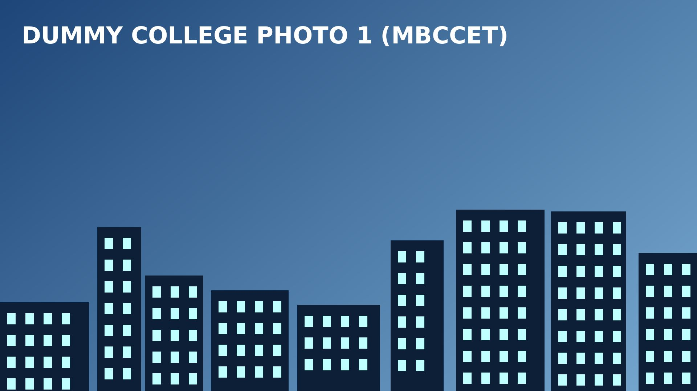

About Peermade, Kerala
Nestled in the serene hill station of Kuttikkanam in Idukki district, the campus is surrounded by lush tea plantations, spice gardens, rolling hills, and mist-covered valleys. The region enjoys a cool and pleasant climate for most of the year, making it an ideal destination for academic pursuits, conferences, and scholarly interactions. The refreshing mountain air, abundant greenery, and tranquil atmosphere provide an inspiring environment for learning, research, and innovation.
Peermade and its surrounding areas are among Kerala's most attractive tourist destinations. Delegates visiting MBCCET can explore renowned attractions such as Vagamon, known for its picturesque meadows and pine forests; Thekkady and Periyar Wildlife Sanctuary, famous for rich biodiversity and wildlife; Panchalimedu, a scenic hilltop viewpoint; and Parunthumpara, celebrated for its breathtaking panoramic views of the Western Ghats. The region's sprawling tea, coffee, and cardamom plantations add to its unique charm and natural beauty. The renowned tourist destination, Munnar, is also in close proximity.